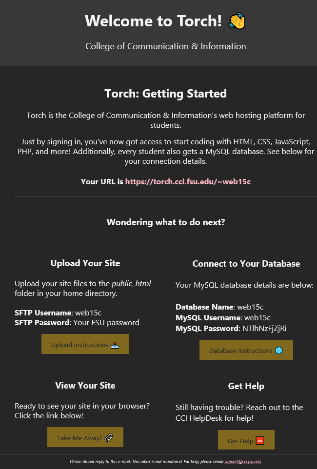
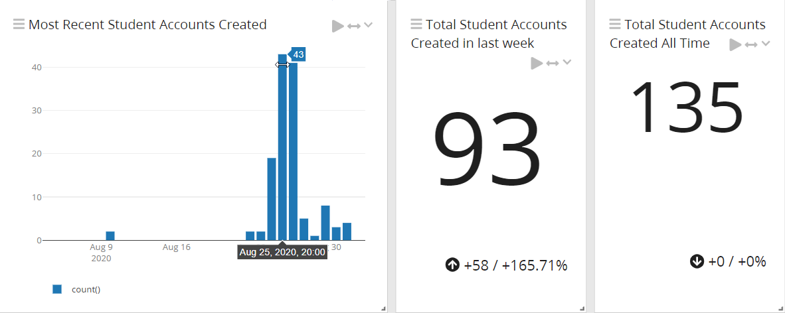
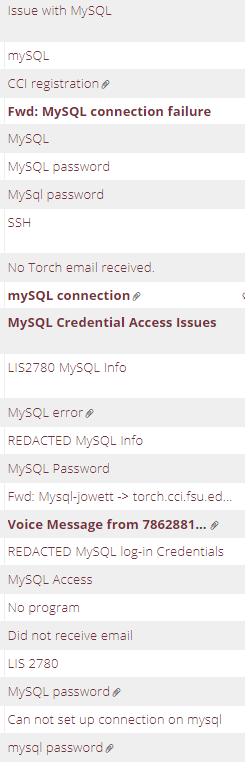

Remember to spellcheck asswipe
Forward - What You Can Gain from Reading This
If you’re a system administrator looking for unique ways to incorporate Linux servers with class ciricumcliums, this article may inspire methodologies on bringing the command line to the student masses.
I asked on reddit’s /r/linuxadmin how they handle student-accessible servers. Many ideas were brought up - segmented Docker containers, locked down hosts, restrictive commands. I went with what I know best: a strong dose of Ansible, glorious SSSD, and trusty Bash.
Links:
- Main script to watch for account creation, create MySQL account, and fire off creds to student
The Problem
One unfortunate reality I’ve discovered, moving from an undergraduate IT student, to System Administrator pursing a Master’s in IT, is that not all students share the same love of the Linux command line as I do.
Most student’s view the command line - a requirement for their Intro to MySQL class, or basic web development - as an obtuse, ancient obstacle for submitting their assignments.
The goal: provide a server (Torch) that will be equally accessible to students that require a GUI for every application, and “power user” students itching for freedom on a university funded psuedo-VPS.
The Rising Action
Previously, CCI operated 4 or so hosts, one for each class that required some server space.
- Each instructor created SSH accounts manually for each student - often with credentials shared class-wide. Students had no sense of privacy or identity with their Linux accounts.
- After class was over, students lost connection with their account. No way would they continue to use, or could use, accounts spanning across servers named by their course code (LIS1234, LIS4321, LIS5666, etc.)
- Advanced students had trouble developing personal projects on hosts without SSL, or permissions for multiple MySQL databases. How would we foster the next Zuckerberg without giving students the tools to experiment?
Myself and my fellow system administrator wanted to create a sandbox for our students. One singular server to rule them all. A hostname easy to remember, credentials that matched their university experience across all services, and something accessible to students simply wanting to do well in their class and never continue beyond their grade.
What We Did Uniquely
SSO and Credentials
SSO is the shit. No holds barred, SSO is the light of my sysadmin life. Every service we employ, whether it’s logging, monitoring, or Ansible automation, needs to have SSO. Besides security benefits, it’s just so convinenet. Our students did not know such joy, recieving a list of usernames and passwords from instructors they would need to pull up before starting every assignment.
(Link to SSSD here) SSSD was our countermeasure to individualzied credentials. Ironically my first project as a HelpDesk technician, SSSD allows fine tuning our Linux authentication from /etc/sudoers to SSH access. Despite being on Debian-based systems, SSSD is the core component of our Ansible configuration and delegating access to our systems.
What about MySQL credentials?
While it is certainly possible to use PAM in conjuction with MySQL, that was one layer of abstraction too far. I was shaking up class procedures that have been in place for a decade - faculty might not appreciate a complete and total overhaul.
In comes postfix, and my fellow sysadmin’s great web design (he used HEML for creating the HTML email).

As you can see here, we are in-tune with the youth of today, adding emojis. The MySQL password is randomized with a little salt shaken on top.
The important part: Students recieve this email at their student address on their first connection, regardless of connection type:
- SSH
- SFTP!!
- MySQL Workbench
Solving the SFTP problem
Back to the main problem we were solving, making the host accessible for students regardless of initial skill level, we had to not only trigger our MySQL account creation on tradational SSH (also accounts for MySQL Workbench), but for SFTP through FileZilla, Transmit, etc.
This was tough. Tradational methods of taking action upon first time account creation didn’t work well - /etc/profile.d, /etc/skel, etc. all failed the SFTP litmus test.
In comes inotifywatch. A beautiful utility that helps monitor directories for changes. The one assumption I had about SSH and SFTP was that a new folder in /home/ would be created with the user’s username.
# infinite loop
while true
do
# upon new /home/ directory creation, spit out the username to $FSUID
FSUID=$(inotifywait -q -e create /home/ | awk '{ print $NF }')
Then check to see if the user already has an account - if not, their MySQL username/databases will be dropped.
flag=/home/"$FSUID"/.flag_DONOTDELETE
if [ -e /home/$FSUID/$flag ]
then
This GitHub Gist has more information on the logic I used.
On a smaller note, I included some text into the above dot file to encourage any curious students to apply for a job - similar to other websites including text in their source code.
echo "Reading the .dotfiles? You're a curious student. Apply for a job at the CCI HelpDesk and mention this message!" >> $flag
A Quick Note on Passwords
Security was a key objective, and I threw in a little bit of salt to help with the password generation, but it’s probably not necessary and be redundant.
PASSWDDB=$(date +%s | sha256sum | base64 | head -c 12 ; echo)
Wrapping Up
One last thing that may be useful to someone is the systemd unit service to run the above program infinitely.
[Unit]
Description=Torch First Login Setup
[Service]
ExecStart=/<script location>/classweb_login.sh
User=root
Group=root
[Install]
WantedBy=multi-user.target
How The Rollout Went
User Testing
Luckily I was enrolled in a Usability Analysis course when performing the initial Torch planning. I realized it may be useful to have some users test the MySQL generation, usability, and login system other than myself.
Thankfully our HelpDesk technicians performed valuable user testing, letting me know where I was assuming too much, or what parts were easy.
2) Uploading a website file
Create a file titled "index.html" on your local machine. Type whatever you would like in that, it can be a simple phrase or word.
Connect to the server with SFTP using the parameters above.
Do you see a file titled ‘Torch Account Information’? If so, can you open it and read the contents?
Upload the index.html file with an FTP program, such as FileZilla or CyberDuck, to either, "public_html" in your home directory, or /web/FSUID. Upload your index.html to either spot.
Using a web browser, go to https://torch.cci.fsu.edu/~FSUID. Did your site load properly, and did you get a lock on the webpage (SSL)?
Scope Creep and the First Day
As the semester drew closer and closer, and working with professors on the new system, I was worried. What would happen if two users logged in at the exact same second? What about different versions of MacOS, MySQL Workbench, Putty, Mac Terminal, and Gentoo users?
At the last second, our scope went up dramatically. We decided to incorporate the bemeoth MySQL-only server into Torch. This made a lot of sense - MySQL 101 students could simply ignore the web development aspects, and have MySQL credentials they could use throughout their degree.
Then it arrived - the onslaught of logins. Enjoy the photos below:

There was confusion in one class that we provided the login credentials, cue tickets:

I eventually setup an auto-responder for the sheer amount of tickets that we could not assist with.
Some commands I didn’t expect users to run:
apt install putty-tools (Obviously, student's don't have sudo access)
/mnt/c/Users/some_student$ ssh some_student@torch.cci.fsu.edu (Copying Windows CMD SSH, and trying to SSH into the server they're already logged into)
cd C:\Users\some_student\Desktop (Self Explanatory)
Thankfully we had Graylog setup to easily parse through command history. My point here is not to make fun of students not having a solid grasp on the command line - only to point out that I didn’t expect such issues from my testing or thought process. We’ve all been there before.